Mapbox tour
22 experiments, each run once with this account's public token (C-002). A fact marked false is a result, not a breakage: each was stated before the run and came out that way. Details in results.md.
standard/buildings-3d
Does the Standard style draw 3D buildings that can be queried through its `buildings` featureset, and does show3dObjects remove them?
- true The buildings featureset returns rendered buildings with a height
- true Turning show3dObjects off changes the picture (mean pixel difference over 10)
- true With show3dObjects off the featureset still returns the building footprints
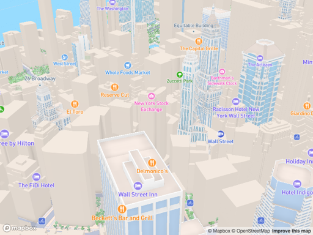
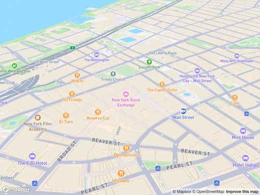
standard/imports
Can my own style import Standard, set Standard's settings inside the import, and put its own layer in one of Standard's slots?
- true The map has one import, basemap
- true The import's settings read back as given: lightPreset dusk, POI labels off
- true With POI labels off, everything the poi featureset still renders is a transit stop
- true My layer sits in the middle slot and is drawn
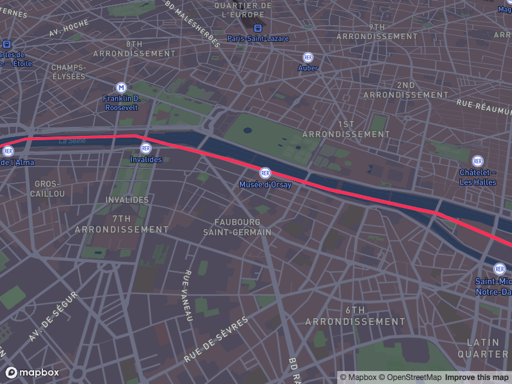
standard/interactions
Does an Interactions API click on the Standard style's buildings featureset fire, and does the select state recolour the building?
- true The style offers a buildings featureset
- true At pitch 45 the click handler fired once, with the building under the cursor
- true The feature state reads back as select: true
- true At pitch 45 the clicked building turns blue at the click point (colorBuildingSelect)
- false At pitch 0 the same kind of click also changes the picture

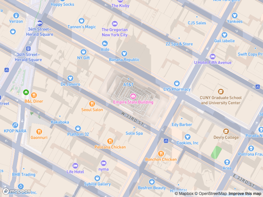
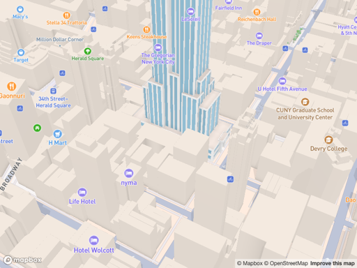
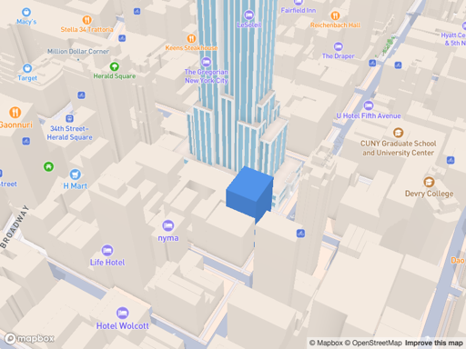
standard/light-presets
Do the Standard style's four light presets each change the picture, without reloading the style?
- true The style declares exactly these four presets: dawn, day, dusk, night
- true Each preset reads back as set
- true Every other preset's mean brightness differs from day's by more than 10 (on 0-255)
- true Night is the darkest of the four
- true Changing the preset never reloaded the style (style.load fired once)
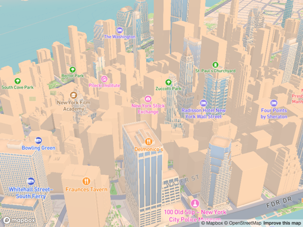
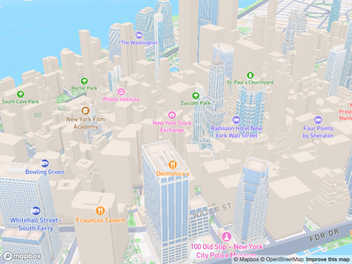
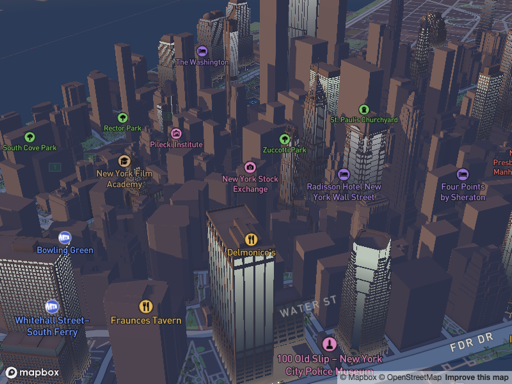
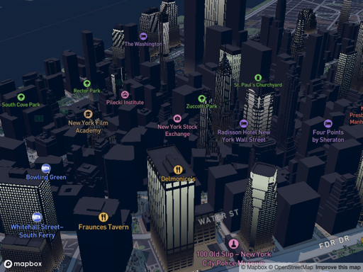
standard/themes
Do the Standard style's themes (default, faded, monochrome) change how colourful the map is?
- true The style declares the themes default, faded and monochrome
- true Each theme reads back as set
- true Faded is less saturated than default
- true Monochrome is the least saturated, under a third of default
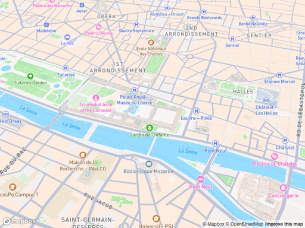
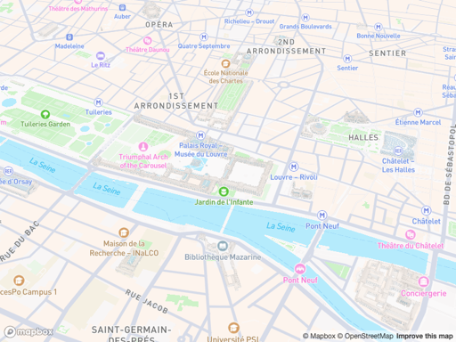
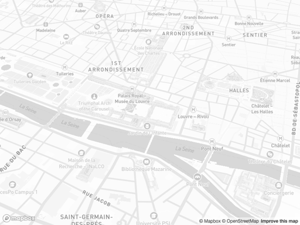
3d/clip
Does a clip layer remove the Standard style's 3D buildings inside its polygon and leave the rest?
- true With the clip on, under half as many buildings are rendered in the polygon's screen box as with it off
- true With 'symbol' in clip-layer-types, the labels in that box go too
- true Below and beside the block nothing changes (mean pixel difference under 2)
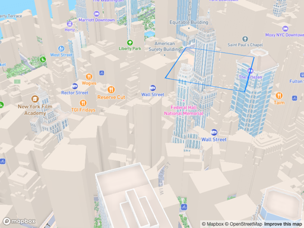
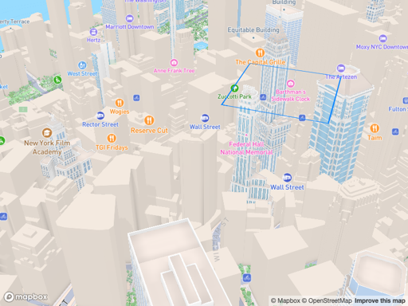
3d/globe
At low zoom, does the Standard style draw a globe surrounded by space, and does Mercator fill the frame instead?
- true The projection is globe without asking for it
- true All four corners are space: each is darker than the globe's centre by more than 60 (0-255)
- true After setProjection("mercator") the projection reads mercator and every corner changes by more than 30
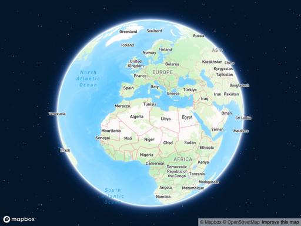
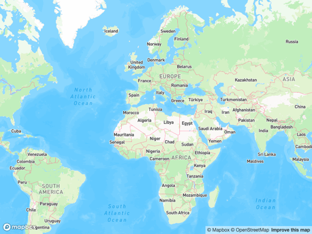
3d/model
Does a glTF model written here (a 30 x 30 x 90 m red tower) appear where it is placed, through addModel and a model layer?
- true Showing the model changes the picture near its position at least ten times more than elsewhere
- true Just above its base point the pixel is red (red channel at least 60 above green and blue)
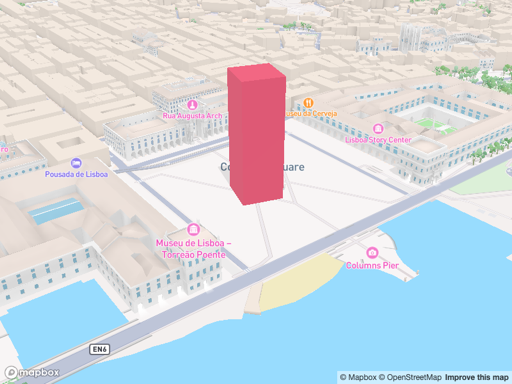
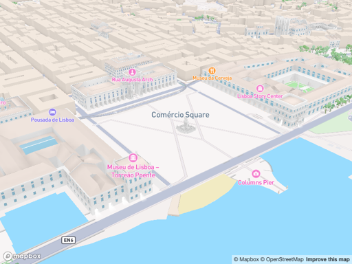
3d/precipitation
Do setSnow and setRain draw anything, and does the map still go idle while they fall?
- true Snow whitens at least 0.2% of the pixels
- true Snow moves: two frames 300 ms apart differ (mean difference over 0.5)
- true Rain changes the picture (mean difference over 5 from the clear map)
- true Rain moves between frames
- false With snow falling the map still fires idle within 5 s
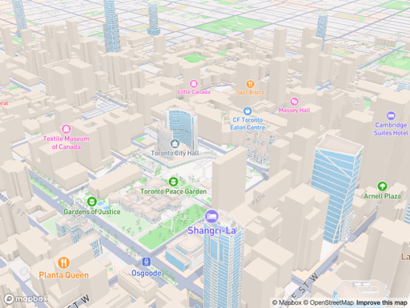
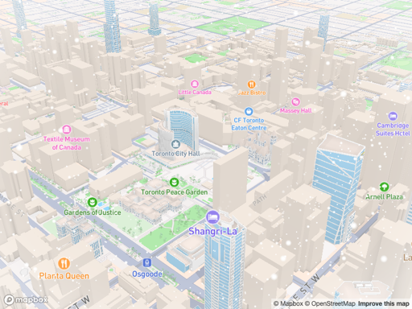
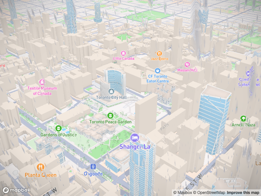
3d/terrain-heights
Does GL JS terrain on Mapbox's DEM put known summits and lake surfaces at their published heights?
- true Both lake surfaces read within 5 m
- true Mont Blanc's and Fuji's summits read within 25 m
- false The Matterhorn's summit reads within 25 m
- false Somewhere within 1 km of the Matterhorn the DEM reaches within 25 m of 4,478 m
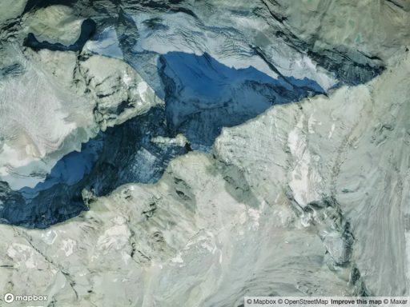
3d/terrain
Does the Standard Satellite style turn terrain on by itself, and does it stay on as you zoom in?
- true Standard Satellite turns terrain on by itself
- true The style's terrain exaggeration is 1 up to zoom 12 and falls to 0 by zoom 13.7 (read from its expression)
- true At zoom 12 and 13 the terrain answers a height query
- true At zoom 14 there is no terrain left to query (queryTerrainElevation returns null)
- true At zoom 13 the terrain is still visible: turning it off changes the view (mean pixel difference over 15)
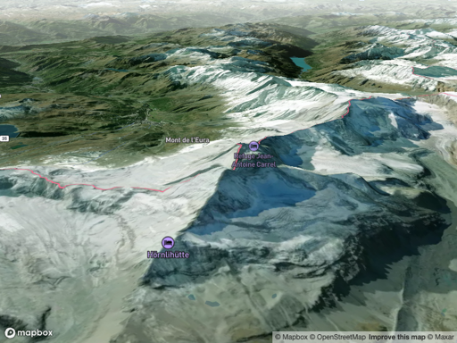
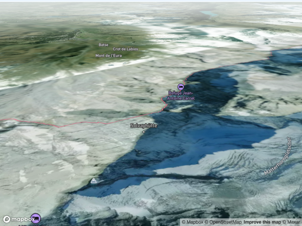
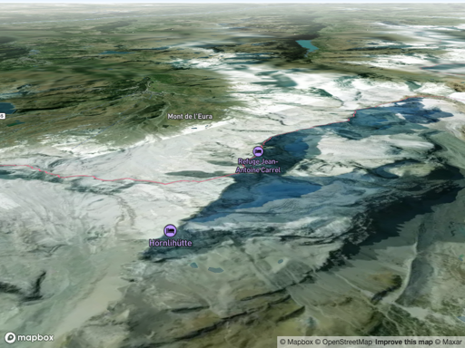
data/raster-particle
Does a raster-particle layer animate global wind from Mapbox's raster-array example tileset, on a public token?
- true The wind tiles are served (at least one, all HTTP 2xx)
- true The particles change the picture (mean difference over 3 from the plain basemap)
- true They move: two frames 300 ms apart differ (mean difference over 0.5)
- false With the layer animating, the map never fires idle within 5 s
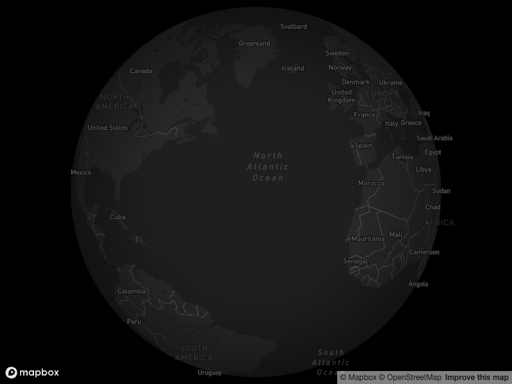
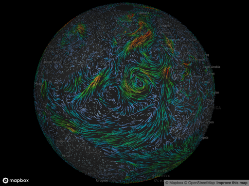
api/isochrone
Does the Isochrone API return nested 10, 20 and 30 minute driving areas around a point, called from a browser page?
- true The API answered 200 with three areas, for 10, 20 and 30 minutes
- true Each longer time covers a larger area
- true Every area contains the starting point
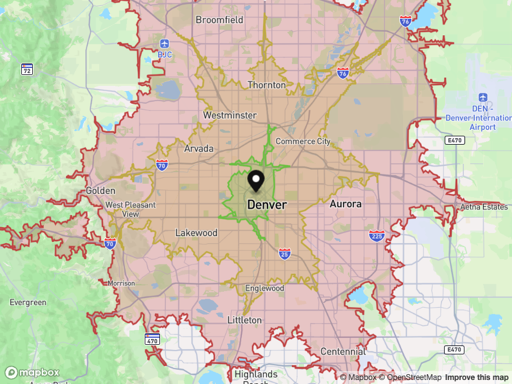
api/map-matching
Does the Map Matching API snap a noisy GPS trace back onto the road it was taken from?
- true The trace came back as one matching
- true The noisy points sit up to 20 m off the route, and 95% of the matched line lies within 5 m of it
- true The matched distance is within 5% of the route's
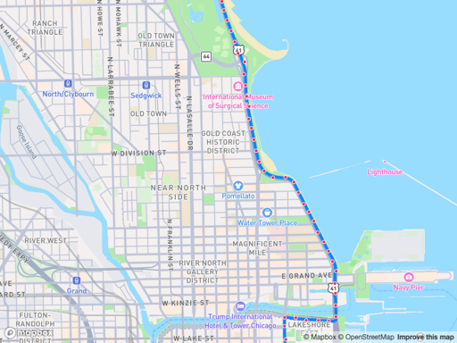
api/matrix
Does the Matrix API return a full table of driving times between four points, and is A-to-B ever different from B-to-A?
- true The API answered 200 with a full 4 x 4 table of times
- true A point to itself takes 0 s
- true For at least one pair, one direction takes over 10% longer than the other
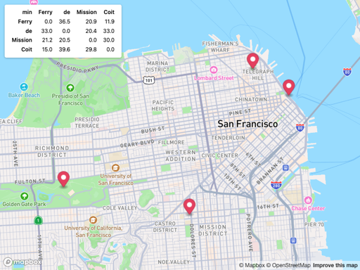
api/optimization
Does the Optimization API find a round trip through seven stops that is shorter than visiting them in the order given?
- true The trip visits all seven stops once and starts at the first
- true The optimised round trip is shorter than the given order
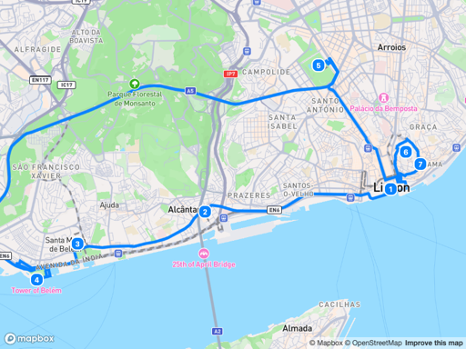
api/search-box-category
Does Search Box category search return cafés inside a given box, each tagged as a café?
- true It returns at least 10 results
- true Every result is inside the box
- false Every result lists 'cafe' among its categories
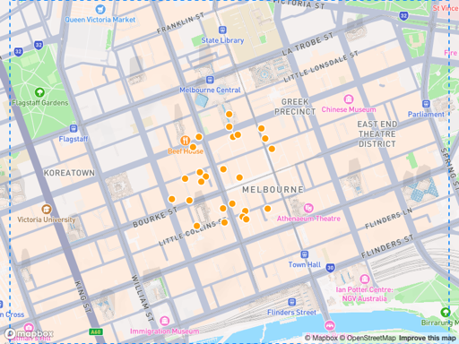
api/search-box-suggest
In one Search Box session, does /suggest find the Rijksmuseum without coordinates, and /retrieve then give its location?
- true The first suggestion is the Rijksmuseum
- true No suggestion carries coordinates
- true Retrieve puts it within 300 m of its published location
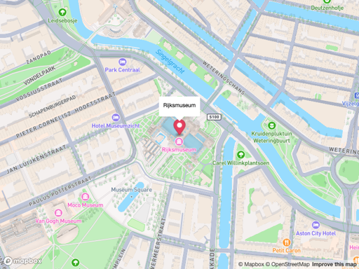
api/static-images
Do Static Images, Static Tiles and Raster Tiles return images of the size asked, with no map library, including a Static Image of the Standard style?
- true A Static Image of the Standard style comes back at the size asked (600 x 400 @2x = 1200 x 800)
- true A Static Image with a pin and a path, framed automatically, comes back at 1200 x 800
- true A 512 px Static Tile @2x comes back at 1024 x 1024
- true A satellite Raster Tile @2x comes back at 512 x 512
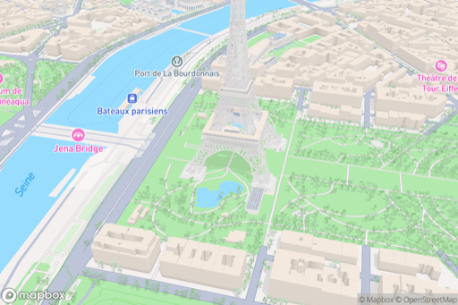
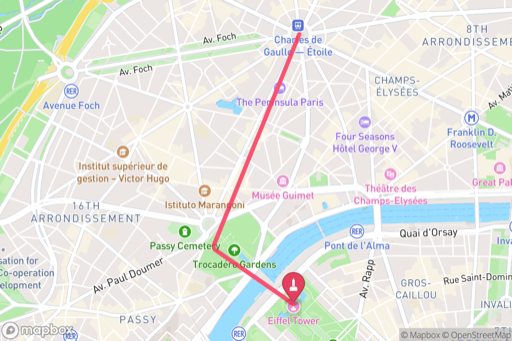
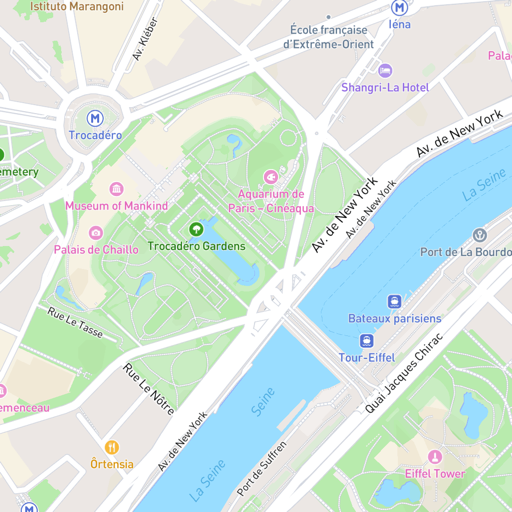
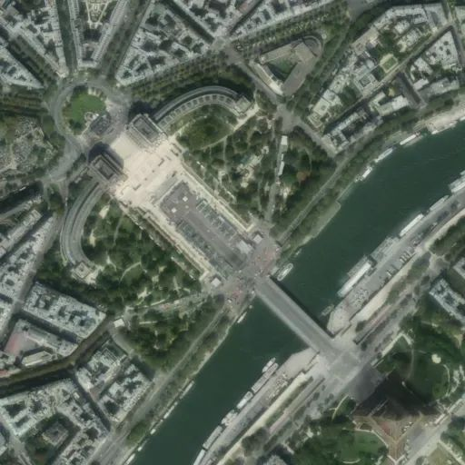
api/styles
Does the Styles API give a public token the Standard style with its settings (schema), and do classic styles have none?
- true The Standard style comes back with a schema of settings
- true lightPreset is a string setting with values dawn, day, dusk, night and default day
- true Standard Satellite has a schema too, with fewer settings than Standard
- true The classic Streets v12 style has no schema
api/tilequery
What does Tilequery say is at the Eiffel Tower in Mapbox Streets, and how high are Mont Blanc and the Matterhorn in Mapbox Terrain contours?
- true Within 100 m of the Eiffel Tower, Streets returns features from several layers, one of them named for the tower
- false Mont Blanc's highest contour is within 20 m of 4,806 m
- false The Matterhorn's highest contour is within 20 m of 4,478 m
- true Each summit query came back with exactly the 50 contours asked for
- true Asking for 100 is refused, so 50 is the most one query returns
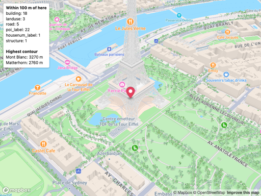
api/token
What does the Tokens API say about this account's public token, and which read-only listing endpoints answer it?
- true The Tokens API says the token is valid and public
- false The account's style list answers a public token
- false The account's tileset list answers a public token
- false The account's dataset list answers a public token
- false The account's token list answers a public token
Map images © Mapbox © OpenStreetMap Improve this map. Satellite imagery in 3d/terrain and api/static-images © Maxar. The screenshots are not covered by this repository's MIT licence.